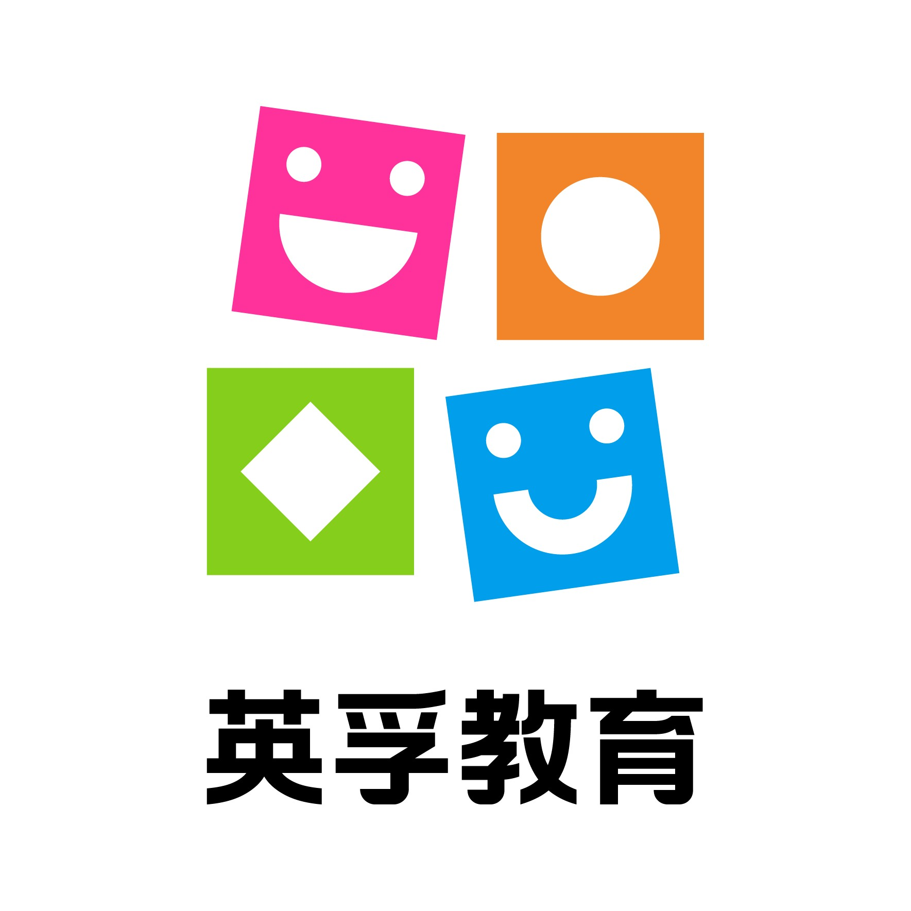
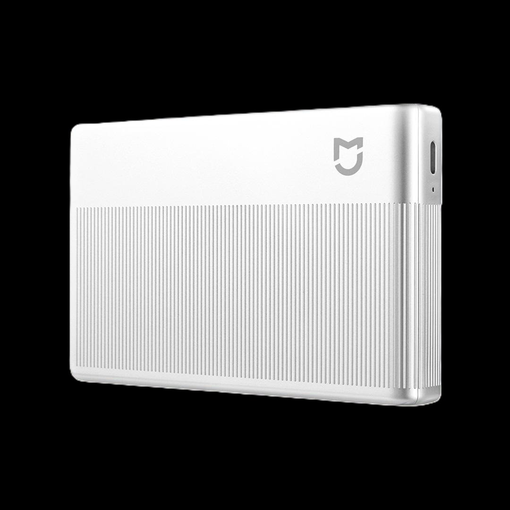
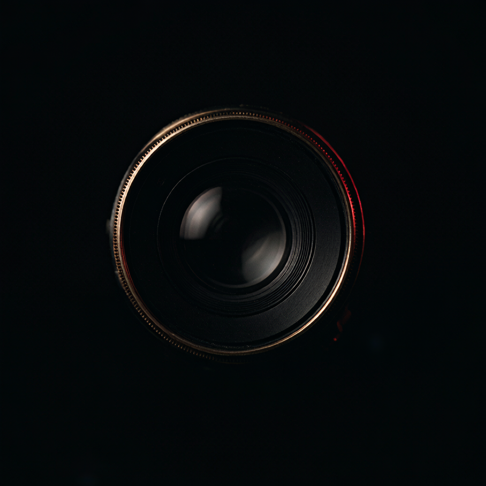

用AI协助产品定义的实践与感受



决策发生在「还没看到产品」的阶段
PRD 是文字的。10个人看同一份 PRD，脑子里有10个不同的产品。
关于「胶卷载入」—— 我在 Figma 里自嗨，直到把原型放到家人面前
AiKen 最初想忠实还原胶卷体验。拍摄前必须打开 App，选择「胶卷」载入，一旦开拍不可更换风格，拍完才能「取出」和「冲洗」。
"我在 Figma 里做了高保真原型，沉浸其中，觉得整个流程非常顺滑。"我让儿子和老婆试用。
儿子：不知道胶卷是什么，根本不知道怎么用。
老婆：对必须先载入、中间不能换风格感到强烈不满。
"我在自嗨。我把自己的认知当成了用户的认知。"高保真不是问题，问题是我没把它放到真人面前。
Figma 的 AI 让我更快地「自嗨」，但真正的价值在于让自己先看到真实场景。
"先看到不够，要让自己看到真实。"从「我觉得」到「数据显示」
真正的突破点
原型能力是「传染」的。看到 UX 用 WorkBuddy 做出来后，我也开始自己上手。
真实案例展示 AI 如何贯穿硬件产品全流程
UX 用 WorkBuddy 制作，一个页面完整展示从开机到成片的全流程
[TODO: 截图或录屏]
我自己用 WorkBuddy 做的联动 demo，验证核心使用场景
[TODO: 截图或录屏]
AI 没有替代我的思考，但它把我最擅长的能力放大了
设计师背景 + Design Thinking + AI = Prototyping 能力质的飞跃。
不是 AI 替代了思考，而是加速了验证循环。
找到你自己的核心能力，让 AI 放大它。「先让自己看到真实，再决定做。」
🤷 3D 效果图我还没搞明白。AI 也不是万能的。
你打算在自己的工作中先用 AI 试什么？
谢谢大家